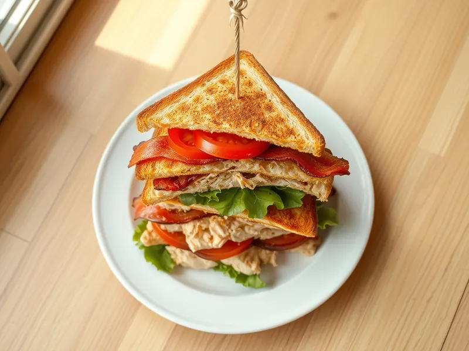

Клаб-сэндвич с курицей и беконом
Трёхэтажный сэндвич из тостов, вчерашней курицы, бекона и помидора
20 мин2 порц.667 ккал на порциюБ 41 · Ж 34 · У 47Американская кухня
Открыть в приложении: порции, таймеры, список покупок
Продукты на 2 порц.
- Хлеб белый6 шт
- Курица готовая (осталась)200 г
- Бекон60 г
- Помидоры1 шт
- Салат листовой40 г
- Майонез1 ст. л.
- Горчица по желанию1 ч. л.
Как готовить
- Обжарьте бекон на сухой сковороде на среднем огне 4-5 минут до хрустящих полосок, выложите на бумажное полотенце.
- Подсушите хлеб на той же сковороде по 1 минуте с каждой стороны до золотистого цвета.
- Нарежьте курицу тонкими ломтиками, помидор кружками. Смешайте майонез с горчицей.
- Смажьте тосты соусом. На первый положите салат и курицу, накройте вторым тостом, сверху бекон и помидор, накройте третьим тостом.
- Слегка прижмите, проткните шпажками и разрежьте по диагонали на треугольники.
Совет. Хлеб для сэндвичей подсушивайте обязательно, иначе он размокнет от помидора и соуса. Подойдёт любая готовая курица: гриль, запечённая или из супа.